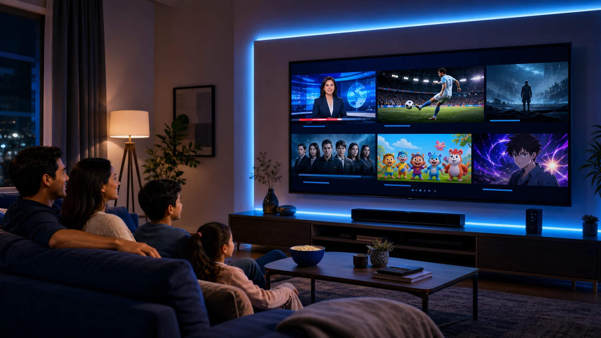
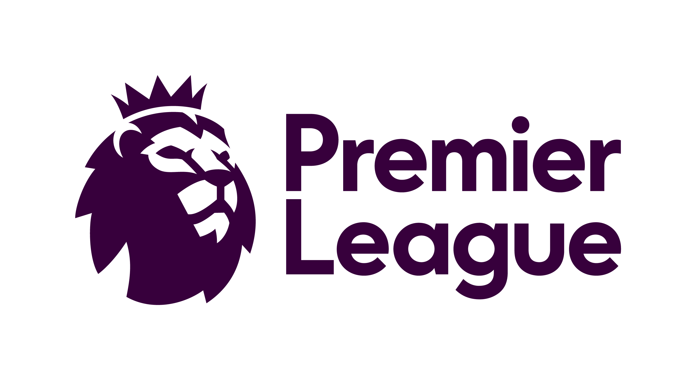
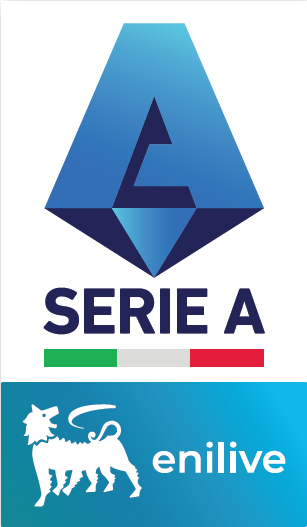

Atención
Call centers
VoIP, CRM, grabación y aplicaciones trabajando al mismo tiempo.
Conectividad según tu realidad
Elige el tipo de servicio y te mostraremos únicamente la información que necesitas. Si todavía tienes dudas, compara ambas opciones antes de decidir.
No necesitas conocer términos técnicos.
Tu elección no se guarda ni se comparte.
Comparación orientativa
Ambos servicios conectan a internet, pero responden a necesidades distintas. Esta guía te ayuda a identificar cuál recorrido se parece más a tu realidad.
Diagnóstico express
Elige la opción que más se parece a tu realidad. No solicitamos datos personales y tus respuestas permanecen únicamente en esta página.
Se calcula únicamente con tus tres respuestas.
No representa desempeño de red; visualiza el impacto declarado por ti.
Comparación rápida
La diferencia principal no es únicamente la velocidad: es cuánto depende tu actividad de la conexión y qué condiciones necesitas definir.
| Criterio | Residencial | Negocio o empresa |
|---|---|---|
| Ideal para | Hogar, clases, entretenimiento y teletrabajo de uso general | Ventas, atención, sedes y aplicaciones críticas |
| La prioridad | Facilidad, velocidad y costo mensual | Previsibilidad, continuidad y capacidad operativa |
| Dimensionamiento | Se elige entre los planes residenciales disponibles | Se revisan procesos, tráfico, sedes, horarios y respaldo |
| Condiciones | Según el plan residencial vigente | Capacidad, soporte y alcance según propuesta y contrato |
| Señal decisiva | Una variación temporal no detiene una actividad crítica | Una interrupción afecta ingresos, atención o sistemas |
Este diagnóstico es orientativo y no sustituye una evaluación técnica. Cobertura, capacidad, simetría, soporte, respaldo, SLA y demás condiciones se confirman únicamente en la propuesta y el contrato aplicables.
Conectividad para empresas
Un servicio residencial y un enlace dedicado pueden anunciar una velocidad parecida, pero no cubren el mismo riesgo. La decisión correcta depende del impacto de una interrupción, las aplicaciones críticas y los compromisos que tu empresa necesita por escrito.
Ver cómo diagnosticamosTráfico que exige consistencia
Latencia, jitter, pérdida y capacidad de subida afectan de manera distinta a cada aplicación. Por eso dimensionamos el conjunto, no un número aislado.
Capacidad para distintos sectores
Estos ejemplos muestran cómo cambia la conversación según el proceso crítico. Netfull diseña la propuesta para la realidad de cada organización, sin limitarse a un solo sector.
VoIP, CRM, grabación y aplicaciones trabajando al mismo tiempo.
GPS, despacho, boletería, cámaras y comunicación operativa.
POS, inventario, facturación, nube y cámaras conectadas.
Transacciones, VPN, sistemas, sucursales y control de acceso.
Imágenes ilustrativas. El alcance, desempeño y disponibilidad dependen de la solución técnica, la cobertura y las condiciones acordadas.
Cuando el uso no es crítico y una variación temporal no detiene la actividad.
Costo primeroCuando ventas, atención o sistemas dependen directamente de la conexión.
Operación primeroCuando una sola ruta concentra demasiado riesgo y se necesita respaldo.
Continuidad primeroPlanes residenciales
Desde navegación diaria hasta múltiples dispositivos conectados al mismo tiempo.
Plan Básico
Para navegar, redes sociales y streaming ligero.
Plan Avanzado
Para familias, clases, teletrabajo y streaming.
Plan Premium
Para alto consumo y muchos equipos conectados.
Precios mensuales. Cobertura e instalación sujetas a evaluación técnica. Consulta términos vigentes antes de contratar.
Entretenimiento en una sola experiencia
Canales en vivo, deportes, eventos, películas, series, contenido infantil y anime desde una plataforma moderna. Todo el contenido disponible viene incluido en tu plan de TV Digital, sin paquetes adicionales.

Disfruta fútbol, películas, series y demás contenido disponible sin contratar paquetes adicionales.
Todo el fútbol, una sola experiencia
Disfruta la programación disponible de las ligas más seguidas de España, Inglaterra, Francia e Italia dentro de tu plan de TV Digital.
Competencias destacadas
La programación disponible de España, Inglaterra, Francia e Italia forma parte del servicio de TV Digital, sin comprar cada liga por separado.
Clásicos, figuras y grandes jornadas.
Consultar programación ↗
Ritmo, intensidad y figuras mundiales.
Consultar programación ↗Talento joven y grandes protagonistas.
Consultar programación ↗
Historia, táctica y rivalidades inolvidables.
Consultar programación ↗Vistos en la cartelera del servicio
Seleccionamos dos títulos que aparecen actualmente en la plataforma. Mira sus tráilers oficiales y consulta la cartelera vigente.
Una comedia de suspenso impredecible protagonizada por Samara Weaving y Ray Nicholson.
Una lucha contrarreloj por sobrevivir al frío extremo, el aislamiento y un entorno que no perdona.
Cartelera revisada el 3 de agosto de 2026. La disponibilidad de ligas, partidos, películas y estrenos puede cambiar según la señal, la programación, la región y los derechos de transmisión. El servicio de TV Digital es suministrado a Netfull bajo contrato comercial con su proveedor. Las marcas y tráilers pertenecen a sus respectivos titulares. © Copyright The Football Association Premier League Limited, 2016.
Televisión en vivo
Recorre señales nacionales e internacionales, guarda tus favoritas y vuelve rápidamente a los canales recientes.
Cartelera del servicio
Selecciona un título y mira su adelanto oficial sin salir de Netfull.
Todos los títulos mostrados fueron observados directamente en la cartelera del servicio el 3 de agosto de 2026. La disponibilidad puede cambiar según programación, región y derechos de transmisión. Los adelantos pertenecen a sus distribuidores oficiales.
*La cantidad de señales, programación, catálogo, compatibilidad y disponibilidad pueden variar según el plan y las actualizaciones del servicio. Consulta condiciones vigentes antes de contratar.
Una experiencia más cercana
Te orientamos desde la primera consulta hasta la instalación residencial o la propuesta empresarial.
Indica si buscas servicio para tu hogar, negocio o empresa y comparte tu zona aproximada.
Revisamos cobertura y, si aplica, los requerimientos básicos de tu operación.
Coordinamos la instalación residencial o preparamos una propuesta empresarial.
Un equipo cercano que conoce la zona y da seguimiento directo.
Una mejor experiencia para videollamadas, clases y entretenimiento.
Te explicamos qué incluye la opción recomendada antes de que decidas.
Cotiza, pregunta y coordina desde el mismo canal de WhatsApp.
Cobertura residencial y empresarial
La disponibilidad puede variar por sector y tipo de servicio. Envíanos tu zona aproximada y te daremos una respuesta clara antes de cotizar o programar una instalación.
Revisar mi ubicaciónPreguntas frecuentes
Si tu pregunta no aparece aquí, escríbenos y con gusto te orientamos.
Hacer una preguntaEnvíanos por WhatsApp únicamente tu colonia o zona aproximada en Nuevo Lourdes. No necesitamos tu dirección exacta para la consulta inicial.
El plan de 30 Mbps cubre un uso esencial; el de 100 Mbps es una opción equilibrada para familias; y el de 200 Mbps ofrece mayor capacidad para varios usuarios y consumo simultáneo.
El residencial está pensado para uso general y se entrega bajo condiciones de servicio masivo. Un enlace dedicado se diseña para operación empresarial y permite definir por escrito capacidad, simetría, IP, soporte, disponibilidad, monitoreo y otras condiciones según la propuesta contratada.
No. Ninguna red elimina por completo el riesgo. Un enlace dedicado busca mayor previsibilidad y compromisos claros; si una interrupción no es aceptable, también evaluamos respaldo, independencia de rutas, conmutación y responsabilidades.
Procesos críticos, usuarios y dispositivos, aplicaciones simultáneas, horarios, sedes, VPN, nube, telefonía, cámaras, necesidad de IP, soporte, disponibilidad, respaldo y el impacto que tendría una interrupción.
Escríbenos por WhatsApp, comparte tu colonia o zona aproximada y el plan que te interesa. Después de confirmar cobertura, te indicaremos disponibilidad y los siguientes pasos.
Nuestro asesor te confirmará los equipos incluidos, condiciones de instalación y términos vigentes antes de que contrates.
La plataforma reúne televisión en vivo, deportes y eventos, películas, series, contenido infantil y anime. También ofrece búsqueda, favoritos, historial y continuidad de reproducción. Todo el contenido disponible viene incluido en el plan de TV Digital, sin contratar paquetes adicionales.
No. La programación deportiva, las películas, series y demás contenido disponible están incluidos en tu plan de TV Digital Netfull. La cartelera y las señales pueden cambiar por programación, región o derechos de transmisión, pero no necesitas comprar cada liga o categoría por separado.
Nuestra cobertura principal está enfocada en Nuevo Lourdes. Comparte únicamente tu colonia o zona aproximada para consultar si existe disponibilidad en tu sector.
Hablemos
Selecciona lo que necesitas. No pedimos tu nombre ni dirección exacta en este sitio; podrás compartir tu zona aproximada y los detalles de tu operación directamente en WhatsApp.